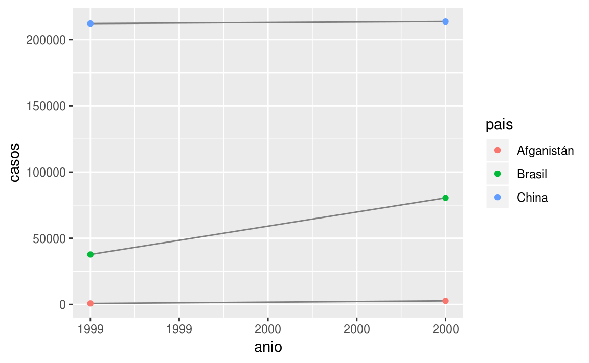

25 Datos ordenados
25.1 Introducción
“Todas las familias felices se parecen unas a otras, pero cada familia infeliz lo es a su manera.” –– León Tolstoy
“Todos los datos ordenados se parecen unos a otros, pero cada dato desordenado lo es a su manera” — Hadley Wickham
En este capítulo aprenderás una metodología consistente para organizar datos en R, a esta metodología le llamaremos tidy data (datos ordenados). Llevar tus datos a este formato requiere algo de trabajo previo, sin embargo dicho trabajo tiene retorno positivo en el largo plazo. Una vez que tengas tus datos ordenados y las herramientas para ordenar datos que provee el tidyverse, vas a gastar mucho menos tiempo pasando de una forma de representar datos a otra, permietiéndote destinar más tiempo a las preguntas analíticas.
Este capítulo te dará una introducción práctica a datos ordenados (o tidy data en inglés) y las herramientas que provee el paquete tidyr. Si desear saber más acerca de la teoría subyacente, puede que te guste el artículo Tidy Data publicado en la revista Journal of Statistical Software, http://www.jstatsoft.org/v59/i10/paper.
25.1.1 Prerrequisitos
En este capítulo nos enfocaremos en tidyr, un paquete que provee un conjunto de herramientas que te ayudarán a ordenar datos desordenados. tidyr es parte del núcleo del tidyverse.
library(tidyverse)
library(datos)25.2 Datos ordenados
Puedes representar la misma información de múltiples formas. El ejemplo a continuación muestra los mismos datos ordenados de cuatro manera distintas. Cada dataset muestra los mismos valores de cuatro variables pais, anio, poblacion y casos, pero cada conjunto de datos organiza los valores de forma distinta.
tabla1
#> # A tibble: 6 x 4
#> pais anio casos poblacion
#> <chr> <int> <int> <int>
#> 1 Afganistán 1999 745 19987071
#> 2 Afganistán 2000 2666 20595360
#> 3 Brasil 1999 37737 172006362
#> 4 Brasil 2000 80488 174504898
#> 5 China 1999 212258 1272915272
#> 6 China 2000 213766 1280428583
tabla2
#> # A tibble: 12 x 4
#> pais anio tipo cuenta
#> <chr> <int> <chr> <int>
#> 1 Afganistán 1999 casos 745
#> 2 Afganistán 1999 población 19987071
#> 3 Afganistán 2000 casos 2666
#> 4 Afganistán 2000 población 20595360
#> 5 Brasil 1999 casos 37737
#> 6 Brasil 1999 población 172006362
#> # … with 6 more rows
tabla3
#> # A tibble: 6 x 3
#> pais anio tasa
#> <chr> <int> <chr>
#> 1 Afganistán 1999 745/19987071
#> 2 Afganistán 2000 2666/20595360
#> 3 Brasil 1999 37737/172006362
#> 4 Brasil 2000 80488/174504898
#> 5 China 1999 212258/1272915272
#> 6 China 2000 213766/1280428583
# Dividido en dos tibbles
tabla4a # casos
#> # A tibble: 3 x 3
#> pais `1999` `2000`
#> <chr> <int> <int>
#> 1 Afganistán 745 2666
#> 2 Brasil 37737 80488
#> 3 China 212258 213766
tabla4b # poblacion
#> # A tibble: 3 x 3
#> pais `1999` `2000`
#> <chr> <int> <int>
#> 1 Afganistán 19987071 20595360
#> 2 Brasil 172006362 174504898
#> 3 China 1272915272 1280428583Las anteriores son representaciones de los mismos datos subyacentes, pero no todas son igualmente fáciles de usar. Un tipo de conjunto de datos, el conjunto de datos ordenado, será mucho más fácil de trabajar en el tidyverse.
Existen tres reglas interrelacionadas que hacen que un conjunto de datos sea ordenado:
- Cada variable tiene su propia columna.
- Cada observación tiene su propia fila.
- Cada valor tiene su propia celda.
La figura 25.1 muestra estas reglas visualmente.

Figure 25.1: Reglas que hacen que un conjunto de datos sea ordenado: las variables están en columnas, las observaciones en filas, y los valores en celdas.
Estas reglas están interrelacionadas ya que es imposible cumplir dos de las tres. Esta interrelación lleva a un conjunto práctico de instrucciones mucho más simple:
- Coloca cada conjunto de datos en un tibble.
- Coloca cada variable en una columna.
En este ejemplo, solo tabla1 está ordenado. Es la única representación en que cada columna es una variable.
¿Por qué asegurarse de que los datos estén ordenados? Existen dos principales ventajas:
- Existe una ventaja general de elegir una forma consistente de almacenar datos. Si tienes una estructura de datos consistente, es más fácil aprender las herramientas que funcionan con ella ya que tienen una uniformidad subyacente.
- Existe una ventaja específica al situar las variables en las columnas ya que permite que la naturaleza vectorizada de R brille. Como habrás aprendido en mutate y summary, muchas de las funciones que vienen con R trabajan con vectores de valores. Esto hace que transformar datos ordenados sea casi natural.
dplyr, ggplot2 y el resto de los paquetes del tidyverse están diseñados para trabajar con datos ordenados. Aquí hay algunos ejemplos de cómo se podría trabajar con tabla1.
# Calcular tasa por cada 10,000 habitantes
tabla1 %>%
mutate(tasa = casos / poblacion * 10000)
#> # A tibble: 6 x 5
#> pais anio casos poblacion tasa
#> <chr> <int> <int> <int> <dbl>
#> 1 Afganistán 1999 745 19987071 0.373
#> 2 Afganistán 2000 2666 20595360 1.29
#> 3 Brasil 1999 37737 172006362 2.19
#> 4 Brasil 2000 80488 174504898 4.61
#> 5 China 1999 212258 1272915272 1.67
#> 6 China 2000 213766 1280428583 1.67
# Calcular casos por anio
tabla1 %>%
count(anio, wt = casos)
#> # A tibble: 2 x 2
#> anio n
#> <int> <int>
#> 1 1999 250740
#> 2 2000 296920
# Visualizar cambios en el tiempo
library(ggplot2)
ggplot(tabla1, aes(anio, casos)) +
geom_line(aes(group = pais), colour = "grey50") +
geom_point(aes(colour = pais))
25.2.1 Ejercicios
Usando prosa, describe como las variables y observaciones se organizan en las tablas de ejemplo.
Calcula la
tasapara las tablastabla2ytabla4a+tabla4b. Necesitarás las siguientes operaciones:- Extrae el número de casos de tuberculosis por país y año.
- Extrae la población por país y año.
- Divide los casos por la población y multiplica por 10000.
Inserta los datos en el lugar adecuado.
¿Cuál representación es más fácil de trabajar? ¿Cuál es la más difícil? ¿Por qué?
- Recrea el gráfico que muestra el cambio en el número de casos usando la
tabla2en lugar de latabla1. ¿Qué debes hacer en primer lugar?
25.3 Reunir y Esparcir
Los principios de los datos ordenados parecen tan obvios que te preguntarás si acaso vas a encontrar un dataset que no esté ordenado. Desafortunadamente, gran parte de los datos que vas a encontrar están desordenados. Existen dos principales razones para esto:
La mayoría de las personas no están familiarizadas con los principios de datos ordenados y es difícil derivarlos por cuenta propia a menos que pases mucho tiempo trabajando con datos.
Los datos a menudo están organizados para facilitar tareas distintas del análisis. Por ejemplo, los datos se organizan para que su registro sea lo más sencillo posible.
Esto significa que para la mayoría de los análisis, necesitarás ordenar los datos. El primer paso siempre es entender el significado de las variables y observaciones. Esto a veces es fácil, otras veces deberás consultar con quienes crearon el dataset. El segundo paso es resolver uno de los siguientes problemas frecuentes:
Una variable se esparce entre varias columnas
Una observación se esparce entre múltiples filas.
Típicamente un dataset tiene uno de los problemas, ¡si contiene ambos significa que tienes muy mala suerte! Para solucionar estos problemas necesitarás las dos funciones más importantes de tidyr: gather() (reunir) y spread() (esparcir).
25.3.1 Gather
Un problema común se tiene cuando en un dataset los nombres de las columnas no representan nombres de variables, sino que representan los valores de una variable. Tomando el caso de la tabla4a: los nombres de las columnas 1999 y 2000 representan los valores de la variable anio y cada fila representa dos observaciones en lugar de una.
tabla4a
#> # A tibble: 3 x 3
#> pais `1999` `2000`
#> <chr> <int> <int>
#> 1 Afganistán 745 2666
#> 2 Brasil 37737 80488
#> 3 China 212258 213766Para ordenar un dataset como este necesitamos reunir (gather) tales columnas en un nuevo par de variables. Para describir dicha operación necesitamos tres parámetros:
El conjunto de columnas que representan valores y no variables. En este ejemplo son las columnas
1999y2000.El nombre de la variable cuyos valores forman los nombres de las columnas. Llamaremos a esto
key(llave) y en este caso corresponde aanio.El nombre de la variable cuyos valores se esparcen por las celdas. Llamaremos a esto
value(valor) y en este caso corresponde al número decasos.
Juntando estos parámetros se puede realizar una llamada a gather():
tabla4a %>%
gather(`1999`, `2000`, key = "anio", value = "casos")
#> # A tibble: 6 x 3
#> pais anio casos
#> <chr> <chr> <int>
#> 1 Afganistán 1999 745
#> 2 Brasil 1999 37737
#> 3 China 1999 212258
#> 4 Afganistán 2000 2666
#> 5 Brasil 2000 80488
#> 6 China 2000 213766Las columnas a reunir quedan seleccionadas siguiendo el estilo de notación de dplyr::select(). En este caso hay dos columnas, por lo que las listamos individualmente. Nota que “1999” y “2000” son nombres no-sintáxicos (debido a que no comienzan con una letra) por lo que los rodeamos con acentos graves (o backticks, en inglés). Para refrescar tu memoria respecto de la selección de columnas, consulta select.
Figure 25.2: Reuniendo tabla4 a un formato ordenado.
En el resultado final, las columnas reunidas se eliminan y obtenemos la nuevas variables key y value. De otro modo, la relacién entre las variables originales se mantiene. Visualmente, esto se observa en la Figura 25.2. Podemos usar gather() para ordenar tabla4b de modo similar. La única diferencia es la variable almacenada en los valores de las celdas:
tabla4b %>%
gather(`1999`, `2000`, key = "anio", value = "poblacion")
#> # A tibble: 6 x 3
#> pais anio poblacion
#> <chr> <chr> <int>
#> 1 Afganistán 1999 19987071
#> 2 Brasil 1999 172006362
#> 3 China 1999 1272915272
#> 4 Afganistán 2000 20595360
#> 5 Brasil 2000 174504898
#> 6 China 2000 1280428583Para combinar las versiones ordenadas de tabla4a y tabla4b en un único tibble, necesitamos usar dplyr::left_join(), función que aprenderás en [datos relacionales].
tidy4a <- tabla4a %>%
gather(`1999`, `2000`, key = "anio", value = "casos")
tidy4b <- tabla4b %>%
gather(`1999`, `2000`, key = "anio", value = "poblacion")
left_join(tidy4a, tidy4b)
#> Joining, by = c("pais", "anio")
#> # A tibble: 6 x 4
#> pais anio casos poblacion
#> <chr> <chr> <int> <int>
#> 1 Afganistán 1999 745 19987071
#> 2 Brasil 1999 37737 172006362
#> 3 China 1999 212258 1272915272
#> 4 Afganistán 2000 2666 20595360
#> 5 Brasil 2000 80488 174504898
#> 6 China 2000 213766 128042858325.3.2 Spread
Extender (spread) es lo opuesto de gather. Lo usas cuando una observación aparece en múltiples filas. Por ejemplo, toma la tabla tabla2: una observación es un país en un año, pero cada observación aparece en dos filas.
tabla2
#> # A tibble: 12 x 4
#> pais anio tipo cuenta
#> <chr> <int> <chr> <int>
#> 1 Afganistán 1999 casos 745
#> 2 Afganistán 1999 población 19987071
#> 3 Afganistán 2000 casos 2666
#> 4 Afganistán 2000 población 20595360
#> 5 Brasil 1999 casos 37737
#> 6 Brasil 1999 población 172006362
#> # … with 6 more rowsPara ordenar esto, primero analiza la representación de un modo similar a cómo se haría con gather(). Esta vez, sin embargo, necesitamos únicamente dos parámetros:
La columna que contiene los nombres de las variables, la columna
key. En este caso corresponde atipo.La columna que contiene valores de múltiples variables, la columna
value. En este caso corresponde acuenta.
Una vez resuelto esto, podemos usar spread(), como se muestra programáticamente abajo y visualmente en la Figura 25.3.
tabla2 %>%
spread(key = tipo, value = cuenta)
#> # A tibble: 6 x 4
#> pais anio casos población
#> <chr> <int> <int> <int>
#> 1 Afganistán 1999 745 19987071
#> 2 Afganistán 2000 2666 20595360
#> 3 Brasil 1999 37737 172006362
#> 4 Brasil 2000 80488 174504898
#> 5 China 1999 212258 1272915272
#> 6 China 2000 213766 1280428583
Figure 25.3: Esparcir la tabla2 la vuelve ordenada
Como te habrás dado cuenta a partir de los argumentos comunes key y value, gather() y spread() son complementarios. gather() genera tablas estrechas y largas, spread() genera tablas anchas y cortas.
25.3.3 Ejercicios
- ¿Por qué
gather()yspread()no son perfectamente simétricas? Observa cuidadosamente el siguiente ejemplo:
stocks <- tibble(
anio = c(2015, 2015, 2016, 2016),
semestre = c(1, 2, 1, 2),
retorno = c(1.88, 0.59, 0.92, 0.17)
)
stocks %>%
spread(anio, retorno) %>%
gather("anio", "retorno", `2015`:`2016`)(Pista: observa los tipos de variables y piensa en los nombres de las columnas)
Tanto spread() como gather() tienen el argumento convert (convertir). ¿Qué hace dicho argumento?
- ¿Por qué falla el siguiente código?
tabla4a %>%
gather(`1999`, `2000`, key = "anio", value = "casos")
#> # A tibble: 6 x 3
#> pais anio casos
#> <chr> <chr> <int>
#> 1 Afganistán 1999 745
#> 2 Brasil 1999 37737
#> 3 China 1999 212258
#> 4 Afganistán 2000 2666
#> 5 Brasil 2000 80488
#> 6 China 2000 213766- ¿Por qué no se puede extender la siguiente tabla? ¿Cómo agregarias una nueva columna para resolver el problema?
personas <- tribble(
~nombre, ~llave, ~valor,
#-----------------|--------|------
"Phillip Woods", "edad", 45,
"Phillip Woods", "estatura", 186,
"Phillip Woods", "edad", 50,
"Jessica Cordero", "edad", 37,
"Jessica Cordero", "estatura", 156
)- Ordena la siguiente tabla. ¿Necesitas extenderla o contraerla? ¿Cuáles son las variables?
embarazo <- tribble(
~embarazo, ~hombre, ~mujer,
"si", NA, 10,
"no", 20, 12
)25.4 Separar y unir
Hasta ahora has aprendido a ordenar las tablas tabla2 y tabla4, pero no la tabla3 que tiene un problema diferente: contiene una columna (tasa) la cual contiene dos variables (casos y poblacion). Para solucionar este problema, necesitamos la función separate() (separar). También aprenderás acerca del complemento de separate(): unite() (unir), que se usa cuando una única variable se reparte en varias columnas.
25.4.1 Separar
separate() divide una columna en varias columnas, dividiendo de acuerdo a la posición de un carácter separador. Tomando la tabla3:
tabla3
#> # A tibble: 6 x 3
#> pais anio tasa
#> <chr> <int> <chr>
#> 1 Afganistán 1999 745/19987071
#> 2 Afganistán 2000 2666/20595360
#> 3 Brasil 1999 37737/172006362
#> 4 Brasil 2000 80488/174504898
#> 5 China 1999 212258/1272915272
#> 6 China 2000 213766/1280428583La columna tasa contiene las variables casos y poblacion, necesitamos dividir esto en dos variables. separate() toma el nombre de la columna a separar y el nombre de las columnas a donde irá el resultado, tal como se muestra en la Figura 25.4 y el código a continuación.
tabla3 %>%
separate(tasa, into = c("casos", "poblacion"))
#> # A tibble: 6 x 4
#> pais anio casos poblacion
#> <chr> <int> <chr> <chr>
#> 1 Afganistán 1999 745 19987071
#> 2 Afganistán 2000 2666 20595360
#> 3 Brasil 1999 37737 172006362
#> 4 Brasil 2000 80488 174504898
#> 5 China 1999 212258 1272915272
#> 6 China 2000 213766 1280428583
Figure 25.4: Separar la tabla3 la vuelve ordenada
Por defecto, separate() dividirá una columna donde aparezca un carácter no alfanumérico (i.e. un carácter que no es un número o letra). Por ejemplo, en el siguiente código, separate() divide los valores de tasa donde aparece la slash. Si deseas usar un carácter específico para separar una columna, puedes especificarlo en el argumento sep de separate(). Por ejemplo, lo anterior se puede re-escribir del siguiente modo:
tabla3 %>%
separate(tasa, into = c("casos", "poblacion"), sep = "/")(Formalmente, sep es una expresión regular y aprenderás más sobre esto en strings.)
Mira atentamente los tipos de columna: notarás que casos y poblacion son columnas de tipo carácter. Este es el comportamiento por defecto en separate(): preserva el tipo de columna. Aquí, sin embargo, no es muy útil ya que se trata de números. Podemos pedir a separate() que intente convertir a un tipo más adecuado usando convert = TRUE:
tabla3 %>%
separate(tasa, into = c("casos", "poblacion"), convert = TRUE)
#> # A tibble: 6 x 4
#> pais anio casos poblacion
#> <chr> <int> <int> <int>
#> 1 Afganistán 1999 745 19987071
#> 2 Afganistán 2000 2666 20595360
#> 3 Brasil 1999 37737 172006362
#> 4 Brasil 2000 80488 174504898
#> 5 China 1999 212258 1272915272
#> 6 China 2000 213766 1280428583También puedes pasar un vector de enteros a sep. separate() interpreta los enteros como las posiciones donde dividir. Los valores positivos comienzan en 1 al extremo izquierdo de las cadenas de texto; los valores negativos comienzan en -1 al extremo derecho de las cadena de texto. Cuando uses enteros para separar cadenas de textos, el largo de sep debe ser uno menos que el número de nombres en into.
Puedes usar este arreglo para separar los últimos dos dígitos de cada año. Esto deja los datos menos ordenados, pero es útil en otros casos, como se verá más adelante.
tabla3 %>%
separate(anio, into = c("siglo", "anio"), sep = 2)
#> # A tibble: 6 x 4
#> pais siglo anio tasa
#> <chr> <chr> <chr> <chr>
#> 1 Afganistán 19 99 745/19987071
#> 2 Afganistán 20 00 2666/20595360
#> 3 Brasil 19 99 37737/172006362
#> 4 Brasil 20 00 80488/174504898
#> 5 China 19 99 212258/1272915272
#> 6 China 20 00 213766/128042858325.4.2 Unir
unite() es el inverso de separate(): combina múltiples columnas en una única columna. Necesitarás esta función con mucha menos frecuencia que separate(), pero aún así es una buena herramienta para tener en el bolsillo trasero.

Figure 25.5: Unir la tabla5 la vuelve ordenada
Podemos usar unite() para unir las columnas siglo y anio creadas en el ejemplo anterior. Los datos están guardados en datos::tabla5. unite() toma un data frame, el nombre de la nueva variable a crear, y un conjunto de columnas a combinar, las que se especifican siguiendo el estilo de la función dplyr::select():
tabla5 %>%
unite(nueva, siglo, anio)
#> # A tibble: 6 x 3
#> pais nueva tasa
#> <chr> <chr> <chr>
#> 1 Afganistán 19_99 745/19987071
#> 2 Afganistán 20_00 2666/20595360
#> 3 Brasil 19_99 37737/172006362
#> 4 Brasil 20_00 80488/174504898
#> 5 China 19_99 212258/1272915272
#> 6 China 20_00 213766/1280428583En este caso también necesitamos el arguento sep. El separador por defecto es el guión bajo (_) entre los valores de las distintas columnas. Si no queremos una separación usamos "":
tabla5 %>%
unite(nueva, siglo, anio, sep = "")
#> # A tibble: 6 x 3
#> pais nueva tasa
#> <chr> <chr> <chr>
#> 1 Afganistán 1999 745/19987071
#> 2 Afganistán 2000 2666/20595360
#> 3 Brasil 1999 37737/172006362
#> 4 Brasil 2000 80488/174504898
#> 5 China 1999 212258/1272915272
#> 6 China 2000 213766/128042858325.4.3 Ejercicios
- ¿Qué hacen los argumentos
extrayfillenseparate()? Experimenta con las diversas opciones a partir de los siguientes datasets de ejemplo.
tibble(x = c("a,b,c", "d,e,f,g", "h,i,j")) %>%
separate(x, c("one", "two", "three"))
tibble(x = c("a,b,c", "d,e", "f,g,i")) %>%
separate(x, c("one", "two", "three"))Tanto
unite()comoseparate()tienen un argumentoremove. ¿Qué es lo que hace? ¿Por qué lo dejarías enFALSE?Compara y contrasta
separate()yextract(). ¿Por qué existen tres variaciones de separación (por posición, separador y grupos), pero solo una forma de unir?
25.5 Valores faltantes
Cambiar la representación de un dataset conlleva el riesgo de generar valores faltantes. Sorprendentemente, un valor puede perderse de dos formas:
- Explícita, i.e. aparece como
NA. - Implícita, i.e. simplemente no aparece en los datos.
Ilustremos esta idea con un dataset muy sencillo:
acciones <- tibble(
anio = c(2015, 2015, 2015, 2015, 2016, 2016, 2016),
trimestre = c(1, 2, 3, 4, 2, 3, 4),
retorno = c(1.88, 0.59, 0.35, NA, 0.92, 0.17, 2.66)
)Existen dos valores faltantes en este dataset:
El retorno del cuarto trimestre de 2015 que está explícitamente perdido, debido a que la celda donde el valor debiera estar contiene
NA.El retorno del primer semestre de 2016 está implícitamente perdido, debido a que simplemente no aparece en el dataset.
Una forma de pensar respecto de esta diferencia es al estilo de un mantra Zen: Un valor perdido explícito es la presencia de una ausencia; un valor perdido implícito es la ausencia de una presencia.
La forma en que se representa un dataset puede dejar explícitos los valores implícitos. Por ejemplo, podemos volver explícitos los valores faltantes implícitos al mover los años a las columnas:
acciones %>%
spread(anio, retorno)
#> # A tibble: 4 x 3
#> trimestre `2015` `2016`
#> <dbl> <dbl> <dbl>
#> 1 1 1.88 NA
#> 2 2 0.59 0.92
#> 3 3 0.35 0.17
#> 4 4 NA 2.66Debido a que estos valores faltantes explícitos pueden no ser tan importantes en otras representaciones de los datos, puedes especificar na.rm = TRUE en gather() para dejar explícitos los valores faltantes implícitos:
acciones %>%
spread(anio, retorno) %>%
gather(anio, retorno, `2015`:`2016`, na.rm = TRUE)
#> # A tibble: 6 x 3
#> trimestre anio retorno
#> <dbl> <chr> <dbl>
#> 1 1 2015 1.88
#> 2 2 2015 0.59
#> 3 3 2015 0.35
#> 4 2 2016 0.92
#> 5 3 2016 0.17
#> 6 4 2016 2.66Otra herramienta importante para hacer explícitos los valores faltantes en datos ordenados es complete():
acciones %>%
complete(anio, trimestre)
#> # A tibble: 8 x 3
#> anio trimestre retorno
#> <dbl> <dbl> <dbl>
#> 1 2015 1 1.88
#> 2 2015 2 0.59
#> 3 2015 3 0.35
#> 4 2015 4 NA
#> 5 2016 1 NA
#> 6 2016 2 0.92
#> # … with 2 more rowscomplete() toma un conjunto de columnas y encuentra todas las combinaciones únicas. Luego se asegura de que el dataset original contiene todos los valores, completando con NAs donde sea necesario.
Existe otra herramienta importante que deberías conocer al momento de trabajar con valores faltantes. En algunos casos en que la fuente de datos se ha usado principalmente para ingresar datos, los valores faltantes indican que el valor previo debe arrastrarse hacia adelante:
tratamiento <- tribble(
~sujeto, ~tratamiento, ~respuesta,
"Derrick Whitmore", 1, 7,
NA, 2, 10,
NA, 3, 9,
"Katherine Burke", 1, 4
)Puedes completar los valores faltantes usando fill(). Esta función toma un conjunto de columnas sobre las cuales los valores faltantes son reemplazados por el valor anterior más cercano que se haya reportado (también conocido como el método LOCF, del inglés last observation carried forward).
tratamiento %>%
fill(sujeto)
#> # A tibble: 4 x 3
#> sujeto tratamiento respuesta
#> <chr> <dbl> <dbl>
#> 1 Derrick Whitmore 1 7
#> 2 Derrick Whitmore 2 10
#> 3 Derrick Whitmore 3 9
#> 4 Katherine Burke 1 425.5.1 Ejercicios
Compara y contrasta el argumento
fillque se usa enspread()concomplete().¿Qué hace el argumento de dirección en
fill()?
25.6 Estudio de caso
Para finalizar el capítulo, combinemos todo lo que aprendiste para atacar un problema real de ordenamiento de datos. El dataset datos::oms contiene datos de tuberculosis (TB) detallados por año, país, edad, sexo y método de diagnóstico. Los datos provienen del Informe de Tuberculosis de la Organización Mundial de la Salud 2014, disponible en http://www.who.int/tb/country/data/download/en/.
Existe abundante información epidemiológica en este dataset, pero es complicado trabajar con estos datos tal como son entregados:
oms
#> # A tibble: 7,240 x 60
#> pais iso2 iso3 anio nuevos_fpp_h014 nuevos_fpp_h1524 nuevos_fpp_h2534
#> <chr> <chr> <chr> <int> <int> <int> <int>
#> 1 Afgh… AF AFG 1980 NA NA NA
#> 2 Afgh… AF AFG 1981 NA NA NA
#> 3 Afgh… AF AFG 1982 NA NA NA
#> 4 Afgh… AF AFG 1983 NA NA NA
#> 5 Afgh… AF AFG 1984 NA NA NA
#> 6 Afgh… AF AFG 1985 NA NA NA
#> # … with 7,234 more rows, and 53 more variables: nuevos_fpp_h3534 <int>,
#> # nuevos_fpp_h4554 <int>, nuevos_fpp_h5564 <int>, nuevos_fpp_h65 <int>,
#> # nuevos_fpp_m014 <int>, nuevos_fpp_m1524 <int>, nuevos_fpp_m2534 <int>,
#> # nuevos_fpp_m3534 <int>, nuevos_fpp_m4554 <int>,
#> # nuevos_fpp_m5564 <int>, nuevos_fpp_m65 <int>, nuevos_fpn_h014 <int>,
#> # nuevos_fpn_h1524 <int>, nuevos_fpn_h2534 <int>,
#> # nuevos_fpn_h3534 <int>, nuevos_fpn_h4554 <int>,
#> # nuevos_fpn_h5564 <int>, nuevos_fpn_h65 <int>, nuevos_fpn_m014 <int>,
#> # nuevos_fpn_m1524 <int>, nuevos_fpn_m2534 <int>,
#> # nuevos_fpn_m3534 <int>, nuevos_fpn_m4554 <int>,
#> # nuevos_fpn_m5564 <int>, nuevos_fpn_m65 <int>, nuevos_ep_h014 <int>,
#> # nuevos_ep_h1524 <int>, nuevos_ep_h2534 <int>, nuevos_ep_h3534 <int>,
#> # nuevos_ep_h4554 <int>, nuevos_ep_h5564 <int>, nuevos_ep_h65 <int>,
#> # nuevos_ep_m014 <int>, nuevos_ep_m1524 <int>, nuevos_ep_m2534 <int>,
#> # nuevos_ep_m3534 <int>, nuevos_ep_m4554 <int>, nuevos_ep_m5564 <int>,
#> # nuevos_ep_m65 <int>, nuevosrecaida_h014 <int>,
#> # nuevosrecaida_h1524 <int>, nuevosrecaida_h2534 <int>,
#> # nuevosrecaida_h3534 <int>, nuevosrecaida_h4554 <int>,
#> # nuevosrecaida_h5564 <int>, nuevosrecaida_h65 <int>,
#> # nuevosrecaida_m014 <int>, nuevosrecaida_m1524 <int>,
#> # nuevosrecaida_m2534 <int>, nuevosrecaida_m3534 <int>,
#> # nuevosrecaida_m4554 <int>, nuevosrecaida_m5564 <int>,
#> # nuevosrecaida_m65 <int>Este es un ejemplo muy típico de un dataset de la vida real. Contiene columnas redundantes, códigos extraños de variables y muchos valores faltantes. En breve, oms está desordenado y necesitamos varios pasos para ordenarlo. Al igual que dplyr, tidyr está diseñado de modo tal que cada función hace bien una cosa. Esto significa que en una situación real deberás encadenar múltiples verbos.
La mejor forma de comenzar es reunir las columnas que no representan variables. Miremos lo que hay:
Pareciera ser que
pais,iso2eiso3son variables redundantes que se refieren al país.anioes claramente una variable.No sabemos aún el significado de las otras columnas, pero dada la estructura de los nombres de las variables (e.g.
nuevos_fpp_h014,nuevos_ep_h014,nuevos_ep_m014) parecieran ser valores y no variables.
Necesitamos agrupar todas las columnas desde nuevos_fpp_h014 hasta recaidas_m65. No sabemos aún que representa esto, por lo que le daremos el nombre genérico de "llave". Sabemos que las celdas representan la cuenta de casos, por lo que usaremos la variable casos.
Existen múltiples valores faltantes en la representación actual, por lo que de momento usaremos na.rm para centrarnos en los valores que están presentes.
oms1 <- oms %>%
gather(nuevos_fpp_h014:nuevosrecaida_m65, key = "llave", value = "casos", na.rm = TRUE)
oms1
#> # A tibble: 76,046 x 6
#> pais iso2 iso3 anio llave casos
#> <chr> <chr> <chr> <int> <chr> <int>
#> 1 Afghanistan AF AFG 1997 nuevos_fpp_h014 0
#> 2 Afghanistan AF AFG 1998 nuevos_fpp_h014 30
#> 3 Afghanistan AF AFG 1999 nuevos_fpp_h014 8
#> 4 Afghanistan AF AFG 2000 nuevos_fpp_h014 52
#> 5 Afghanistan AF AFG 2001 nuevos_fpp_h014 129
#> 6 Afghanistan AF AFG 2002 nuevos_fpp_h014 90
#> # … with 7.604e+04 more rowsPodemos tener una noción de la estructura de los valores en la nueva columna llave si hacemos un conteo:
oms1 %>%
count(llave)
#> # A tibble: 56 x 2
#> llave n
#> <chr> <int>
#> 1 nuevos_ep_h014 1038
#> 2 nuevos_ep_h1524 1026
#> 3 nuevos_ep_h2534 1020
#> 4 nuevos_ep_h3534 1024
#> 5 nuevos_ep_h4554 1020
#> 6 nuevos_ep_h5564 1015
#> # … with 50 more rowsPuedes deducir lo siguiente por cuenta propia pensando y experimentando un poco, pero afortunadamente tenemos el diccionario de datos a mano. Este nos dice lo siguiente:
Lo que aparece antes del primer
_en las columnas denota si la columna contiene casos nuevos o antiguos de tuberculosis. En este dataset, cada columna contiene nuevos casos.Lo que aparece luego de indicar si se refiere casos nuevos o antiguos es el tipo de tuberculosis:
recaidase refiere a casos reincidentesepse refiere a tuberculosis extra pulmonarfpnse refiere a casos de tuberculosis pulmonar que no se pueden detectar mediante examen de frotis pulmonar (frotis pulmonar negativo)fppse refiere a casos de tuberculosis pulmonar que se pueden detectar mediante examen de frotis pulmonar (frotis pulmonar positivo)
La letra que aparece después del último
_se refiere al sexo de los pacientes. El conjunto de datos agrupa en hombres (h) y mujeres (m).Los números finales se refieren al grupo etareo que se ha organizado en siete categorías:
014= 0 – 14 años de edad1524= 15 – 24 años de edad2534= 25 – 34 años de edad3544= 35 – 44 años de edad4554= 45 – 54 años de edad5564= 55 – 64 años de edad65= 65 o más años de edad
Necesitamos hacer un pequeño cambio al formato de los nombres de las columnas: desafortunadamente lo nombres de las columnas son ligeramente inconsistentes debido a que en lugar de nuevos_recaida tenemos nuevosrecaida (es difícil darse cuenta de esto en esta parte, pero si no lo arreglas habrá errores en los pasos siguientes). Aprenderás sobre str_replace() en strings, pero la idea básica es bastante simple: reemplazar los caracteres “nuevosrecaida” por “nuevos_recaida”. Esto genera nombres de variables consistentes.
oms2 <- oms1 %>%
mutate(llave = stringr::str_replace(llave, "nuevosrecaida", "nuevos_recaida"))
oms2
#> # A tibble: 76,046 x 6
#> pais iso2 iso3 anio llave casos
#> <chr> <chr> <chr> <int> <chr> <int>
#> 1 Afghanistan AF AFG 1997 nuevos_fpp_h014 0
#> 2 Afghanistan AF AFG 1998 nuevos_fpp_h014 30
#> 3 Afghanistan AF AFG 1999 nuevos_fpp_h014 8
#> 4 Afghanistan AF AFG 2000 nuevos_fpp_h014 52
#> 5 Afghanistan AF AFG 2001 nuevos_fpp_h014 129
#> 6 Afghanistan AF AFG 2002 nuevos_fpp_h014 90
#> # … with 7.604e+04 more rowsPodemos separar los valores en cada código aplicando separate() dos veces. La primera aplicación dividirá los códigos en cada _.
oms3 <- oms2 %>%
separate(llave, c("nuevos", "tipo", "sexo_edad"), sep = "_")
oms3
#> # A tibble: 76,046 x 8
#> pais iso2 iso3 anio nuevos tipo sexo_edad casos
#> <chr> <chr> <chr> <int> <chr> <chr> <chr> <int>
#> 1 Afghanistan AF AFG 1997 nuevos fpp h014 0
#> 2 Afghanistan AF AFG 1998 nuevos fpp h014 30
#> 3 Afghanistan AF AFG 1999 nuevos fpp h014 8
#> 4 Afghanistan AF AFG 2000 nuevos fpp h014 52
#> 5 Afghanistan AF AFG 2001 nuevos fpp h014 129
#> 6 Afghanistan AF AFG 2002 nuevos fpp h014 90
#> # … with 7.604e+04 more rowsA continuación podemos eliminar la columna nuevos ya que es constante en este dataset. Además eliminaremos iso2 e iso3 ya que son redundantes.
oms3 %>%
count(nuevos)
#> # A tibble: 1 x 2
#> nuevos n
#> <chr> <int>
#> 1 nuevos 76046
oms4 <- oms3 %>%
select(-nuevos, -iso2, -iso3)Luego separamos sexo_edad en sexo y edad dividiendo luego del primer carácter:
oms5 <- oms4 %>%
separate(sexo_edad, c("sexo", "edad"), sep = 1)
oms5
#> # A tibble: 76,046 x 6
#> pais anio tipo sexo edad casos
#> <chr> <int> <chr> <chr> <chr> <int>
#> 1 Afghanistan 1997 fpp h 014 0
#> 2 Afghanistan 1998 fpp h 014 30
#> 3 Afghanistan 1999 fpp h 014 8
#> 4 Afghanistan 2000 fpp h 014 52
#> 5 Afghanistan 2001 fpp h 014 129
#> 6 Afghanistan 2002 fpp h 014 90
#> # … with 7.604e+04 more rows¡Ahora el dataset oms está ordenado!
Hemos mostrado el código parte por parte, asignando los resultados intermedios a nuevas variables. Esta no es la forma típica de trabajo. En cambio, lo que se hace es formar incrementalmente un encadenamiento complejo:
oms %>%
gather(llave, valor, nuevos_fpp_h014:nuevosrecaida_m65, na.rm = TRUE) %>%
mutate(llave = stringr::str_replace(llave, "nuevosrecaida", "nuevos_recaida")) %>%
separate(llave, c("nuevos", "tipo", "sexo_edad")) %>%
select(-nuevos, -iso2, -iso3) %>%
separate(sexo_edad, c("sexo", "edad"), sep = 1)25.6.1 Ejercicios
En este caso de estudio fijamos
na.rm = TRUEpara simplificar la verificación de que tenemos los valores correctos. ¿Es esto razonable? Piensa en como los valores faltantes están representados en este dataset. ¿Existen valores faltantes implícitos? ¿Cuál es la diferencia entreNAy cero?¿Qué ocurre si omites la aplicación de
mutate()? (mutate(llave = stringr::str_replace(llave, "nuevosrecaida", "nuevos_recaida")))Afirmamos que
iso2eiso3son redundantes respecto apais. Confirma esta premisa.Para cada país, año y sexo calcula el total del número de casos de tuberculosis. Crea una visualización informativa de los datos.
25.7 Datos no ordenados
Antes de pasar a otros tópicos, es conveniente referirse brevemente a datos no ordenados. Anteriormente en el capítulo, usamos el término peyorativo “desordenados” para referirnos a datos no ordenados. Esto es una sobresimplificación: existen múltiples estructuras de datos debidamente fundamentadas que no corresponden a datos ordenados. Existen dos principales razones para usar otras estructuras de datos:
Las representaciones alternativas pueden traer ventajas importantes en términos de desempeño o tamaño.
Algunos áreas especializadas han evolucionado y tienen sus propias convenciones para almacenar datos, las que pueden diferir respecto de las convenciones de datos ordenados.
Cada uno de estas razones significa que necesitarás algo distinto a un tibble (o data frame). Si tus datos naturalmente se ajustan a una estructura rectangular compuesta de observaciones y variables, pensamos que datos ordenados debería ser tu elección por defecto. Sin embargo, existen buenas razones para usar otras estructuras; datos ordenados no es la única forma.
Si quieres aprender más acerca de datos no ordenados, recomendamos fuertemente este artículo del blog de Jeff Leek: http://simplystatistics.org/2016/02/17/non-tidy-data/